EDUCATION & RESEARCH
HOMS
Build, assess, moderate and govern education outputs while academic authority stays with people.
Explore HOMS ↗6 HOMS routes · controlled variants verifiedDIO WORKFLOWS / PROOF-CARRYING INTELLIGENCE
DIO is a proof-carrying intelligence operating architecture. One governed intelligence architecture: one governed organism that composes reusable capability into products, executes within explicit authority, records what happened, learns from real-world outcomes, and determines what it should try next without turning learning into permission.
DIO does not just run intelligent products. It compiles, governs, proves and evolves them. Learning may change what DIO proposes next. It never grants DIO new authority.
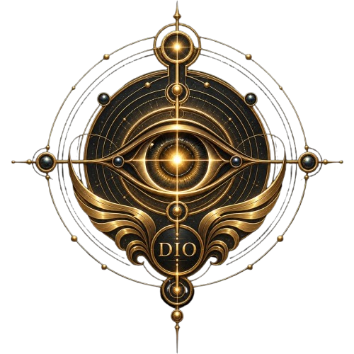
DIO / LAUNCH FILM
The film is the invitation. The sections below are the receipts.
THE OPERATING THESIS
A useful answer is not the same thing as an authorised action. DIO binds intent, composition, execution, evidence, settlement and learning into one inspectable operating loop so consequence can be challenged after the fact.
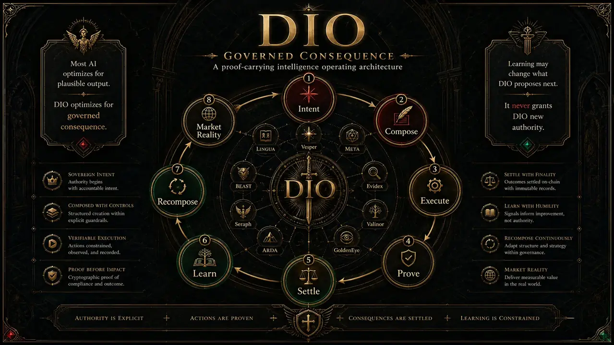
THE CONSTITUTION
The architecture is built around distinctions that ordinary automation systems tend to blur. They are not word games. They are fault lines where bad automation becomes dangerous automation.
Anything can become anything else except authority.
Valinor holds the sovereign authority boundary. Seraph acts as the outbound gate. Harmonic Governance supplies pressure, scrutiny and review conditions. ARDA gives execution a measured identity and attestation trail.
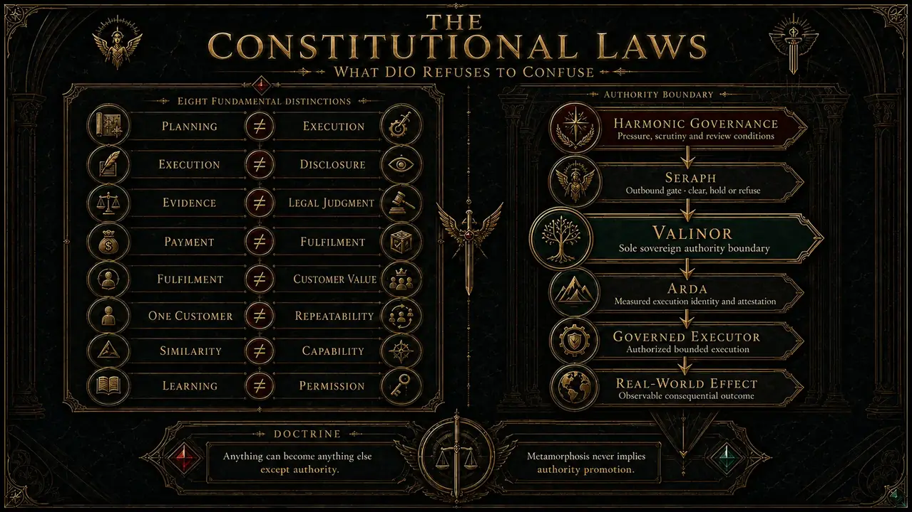
THE PRODUCT FACTORY
DIO separates organism, META runtime, work patterns, profiles, products and incarnations. That lets new products inherit already-earned capability instead of rebuilding an entire operating spine from scratch.
From the Constitution through profiles, compiler, work patterns, proof products, META Runtime, GoldenEye, Commercial Truth and the Product Incarnation Studio, each phase turned loose capability into a governed product factory.
Compile. Prove. Incarnate. Expand.
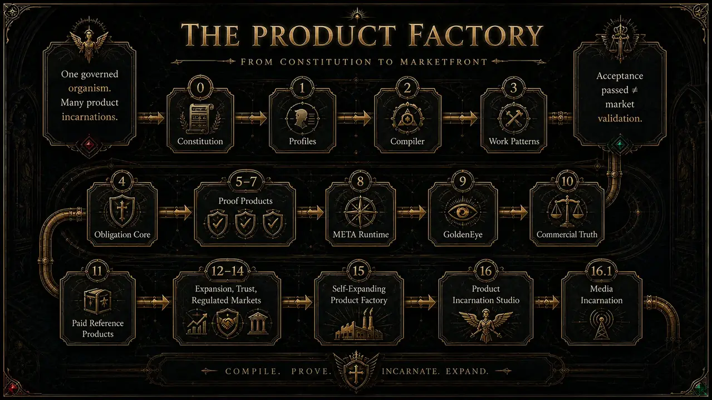
THE METAMORPHIC CASCADE
In DIO, organ, capability, product, Studio, crystal, composite unit and market surface are roles, not permanent species. A capability may become a product. A product may expose reusable capability. A Studio can become a component inside a larger Studio. Repeated successful work can crystallise into a cheaper governed executor.
Metamorphosis never implies authority promotion.
Packaging can change. Buyer surface can change. Executor identity remains accountable. Every transformation carries its rules, evidence and boundaries with it.
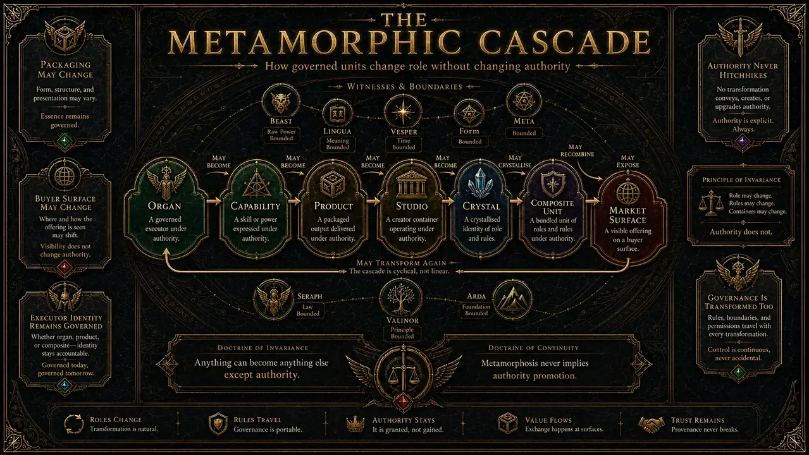
THE PRODUCT UNIVERSE
The current portfolio holds 53 base-canon routes plus 15 canon extensions, for 68 canon-level products DIO has learned to compose or promote from receipt-bound production evidence. ATLAS goes further: it reasons over domain, job morphology and verified capability to generate places the organism might become useful next.
ATLAS candidate directions are not products, demand or proof. They are hypotheses classified by what DIO can actually compose, what it can only partially compose, and where a capability gap remains.
ATLAS gives DIO an imagination without giving it delusions.
OPEN THE 68-PRODUCT PORTFOLIO ↗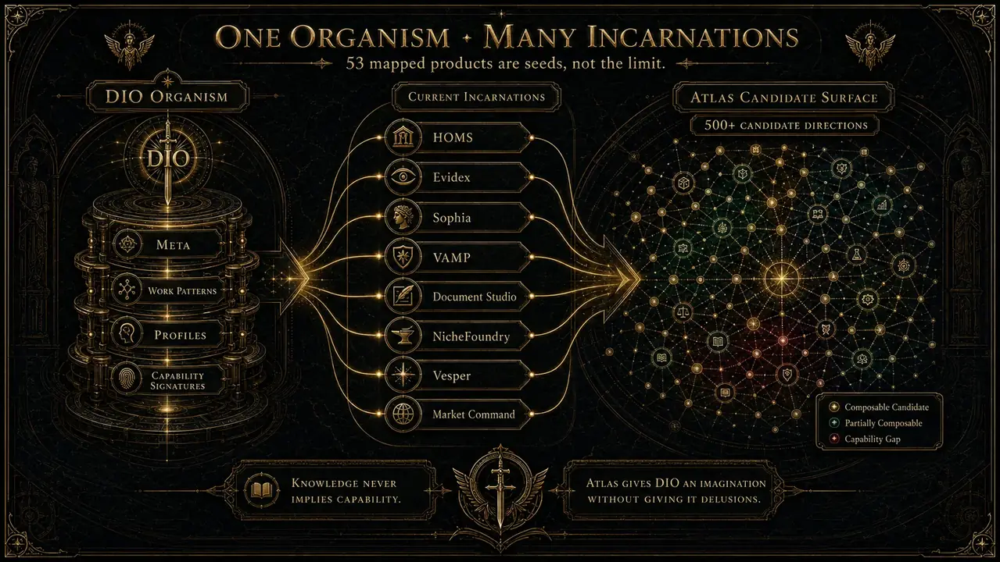
THE STUDIO CONSTELLATION
Article & Publication, Finance Readiness, Professional Correspondence and Site Studio are bounded production instruments that create native files and evidence, not decorative receipts. They can also combine into larger compositions such as Funding Proposal Studio and Product Incarnation Studio.
Native executors produce real artifacts. Synthetic receipts do not replace native proof.
Human authority remains at release.
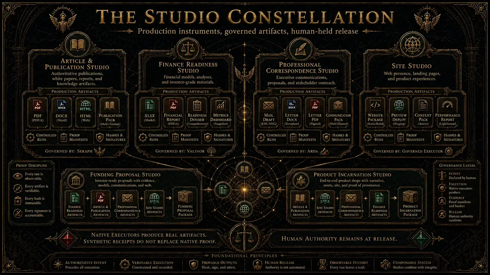
COMMERCIAL METABOLISM
DIO separates execution truth from commercial truth. Buyer segment, offer, channel, exposure, response, payment or delivery evidence and world settlement feed BEAST market crystals and LINGUA projection updates. Those observations can change the next hypothesis.
They cannot silently grant permission to publish, spend, send or deliver. A successful campaign is a signal, not a mandate.
Commercial success never grants authority to publish, spend, send or deliver.
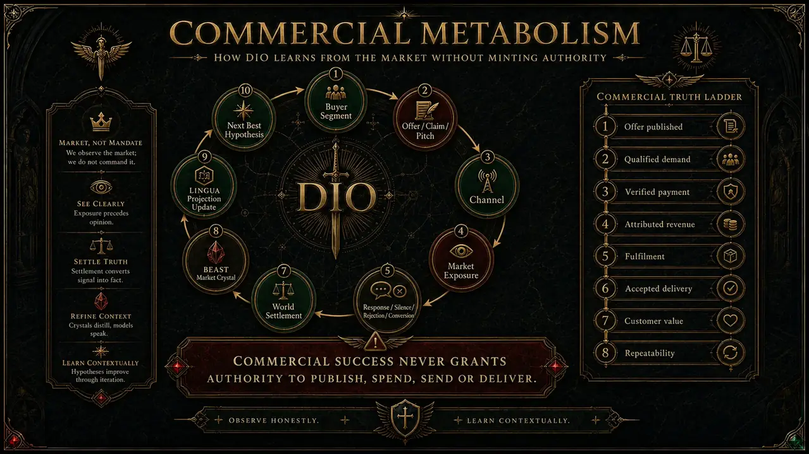
THE MAJOR PRODUCT FAMILIES
Six major product families now get equal public prominence here. The broader 68-route portfolio remains one level deeper, with buyer jobs, controlled proof and authority boundaries intact.
Build, assess, moderate and govern education outputs while academic authority stays with people.
Explore HOMS ↗6 HOMS routes · controlled variants verified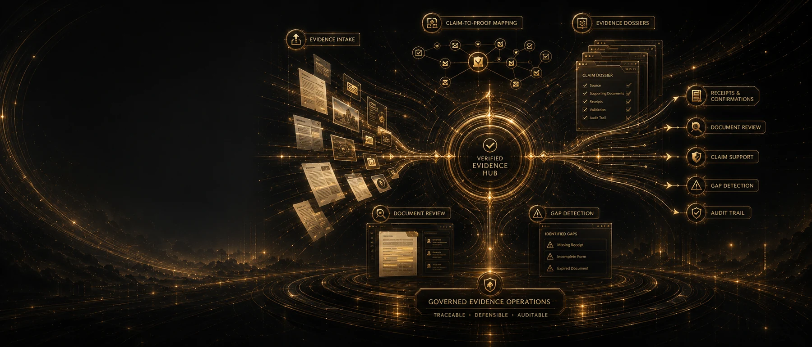
Map requirements, claims and source material into visible support, gaps and review-ready evidence.
Explore Evidex ↗Evidence routes · inspectable proof packs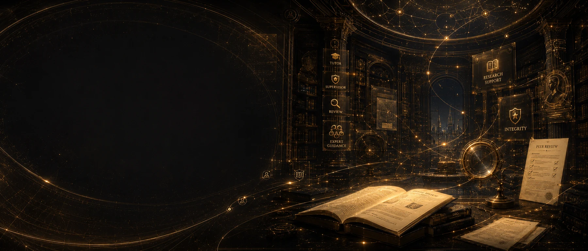
Support tutoring, supervision, research review and integrity work without automating academic judgement.
Explore Sophia ↗Watch film ↗5 Sophia routes · human academic judgement preserved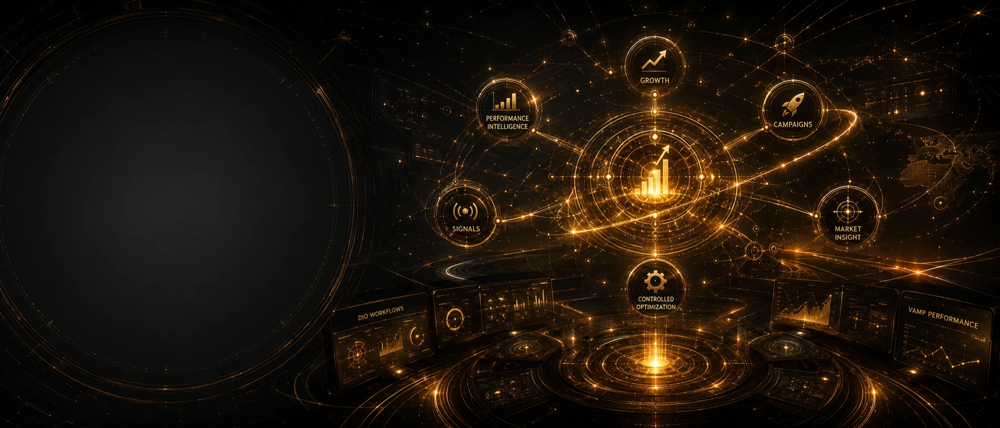
Turn signals into bounded briefs, performance evidence and optimisation proposals without inferring authority.
Explore VAMP ↗Watch film ↗Performance routes · external actions remain gatedEdit, localise, proof and package source-bound documents across publication formats.
Explore Document Studio ↗Watch film ↗Edit · localise · publish with human release authorityCapture context, route intent and hand work into DIO while keeping consequential authority explicit.
Explore Vesper ↗Watch film ↗Public text rail · governed handoff · external effects heldHOW THE SIX FAMILIES WORK
These diagrams are explanatory views, not substitutes for proof. Each suite page keeps the real controlled artifacts, exception cases and authority boundaries alongside the visual story.
The education suite turns authorised context into reviewable teaching, assessment and quality outputs.
See HOMS in context ↗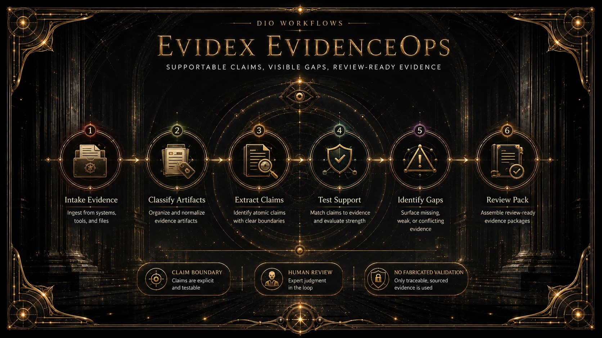
The evidence suite makes the relationship between requirement, claim, source and missing proof visible.
See Evidex in context ↗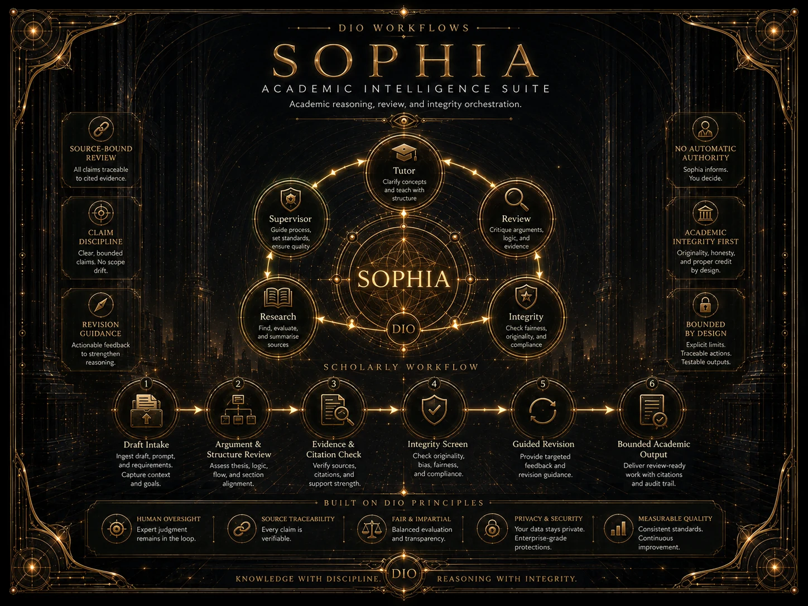
The academic intelligence suite structures guidance and scholarly review while preserving human academic authority.
See Sophia in context ↗
The performance suite converts signals into inspectable performance work without turning optimisation into permission.
See VAMP in context ↗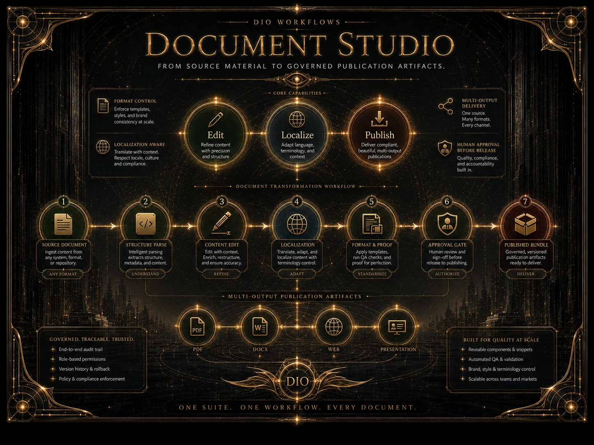
The publication suite carries source material through governed editing, localisation and output preparation.
See Document Studio in context ↗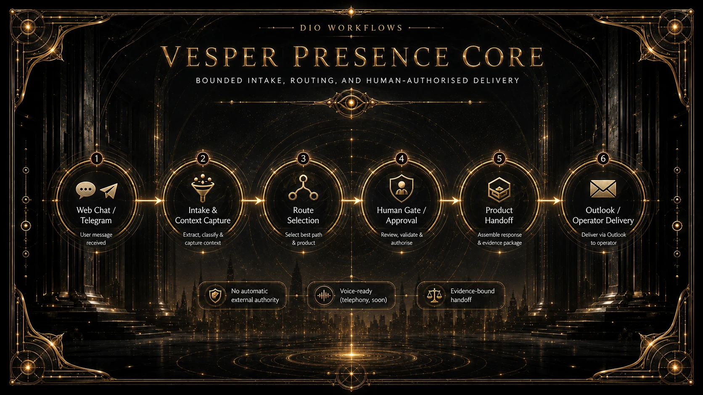
The presence suite is the public front door. Public web is text-first in v1; consequential effects remain separately gated.
See Vesper in context ↗BUILT BEFORE IT WAS PITCHED
The 53-product production gauntlet records 159 controlled journeys: normal, messy and adversarial variants for every base-canon incarnation. Those receipts prove controlled execution. They do not counterfeit willingness to pay, customer value or repeatability.
Every base-canon route completed its three controlled variants in the supplied production proof corpus.
The website exposes curated customer-facing outputs while raw paths, private material and unnecessary internals stay backstage.
Independent demand, verified payment, accepted delivery, customer value and repeatability still have to be earned in the world.
WHY DIO EXISTS
How can intelligent systems perform meaningful professional work without silently losing evidence, provenance, identity or human authority? DIO treats those constraints as first-class architecture rather than compliance stickers added at the end.
The public phase now tests the next truth: whether that same governed machinery creates products people repeatedly choose, pay for and value.
START WITH THE PROBLEM
Customer, partner, enterprise lead or investor: give enough context to route the conversation properly. The intake enters the existing governed public lead pipeline.
 VESPERASK ABOUT DIO
VESPERASK ABOUT DIO